基督教臺灣信義會
靈糧堂 週報

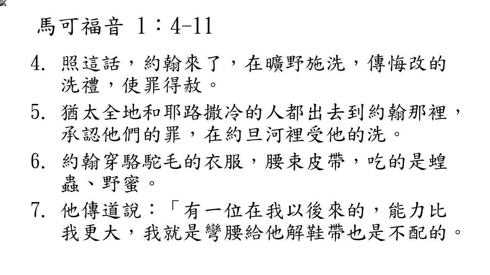
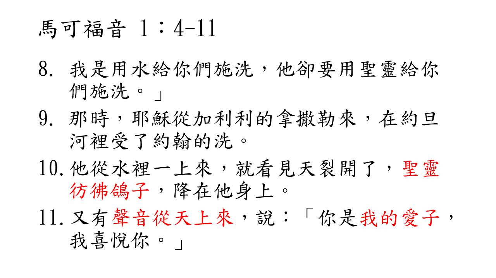
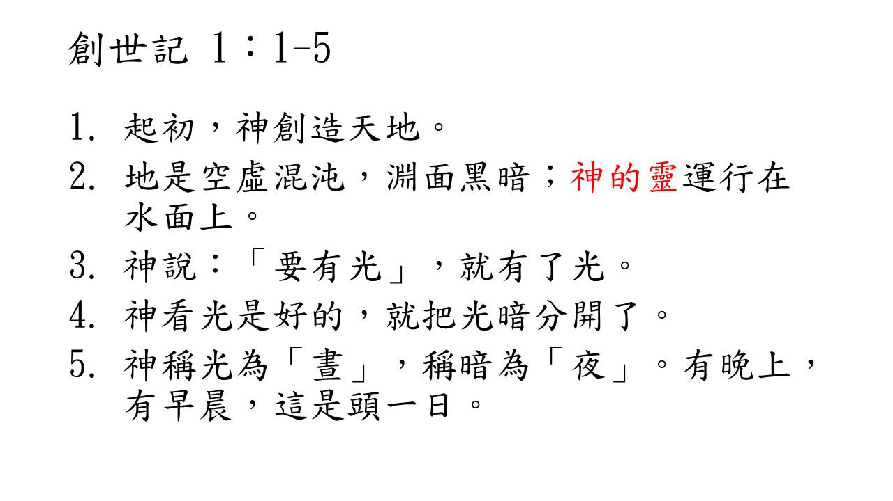
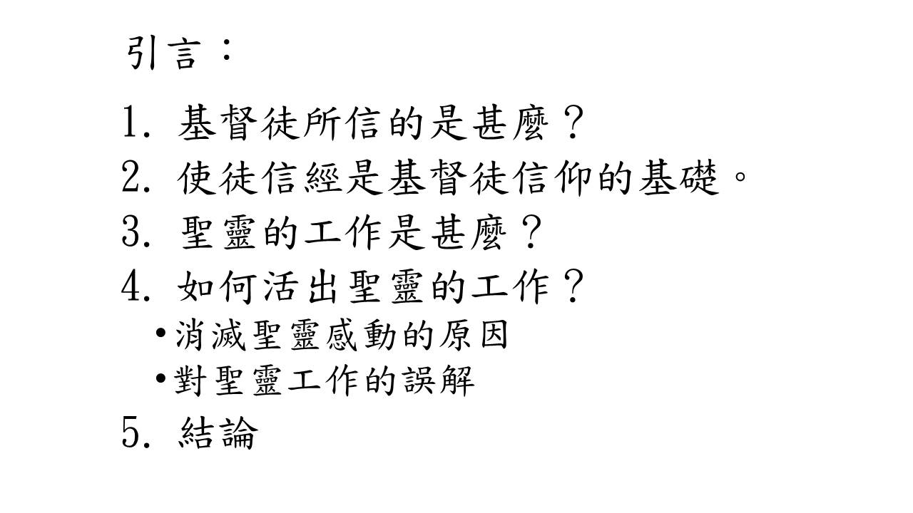
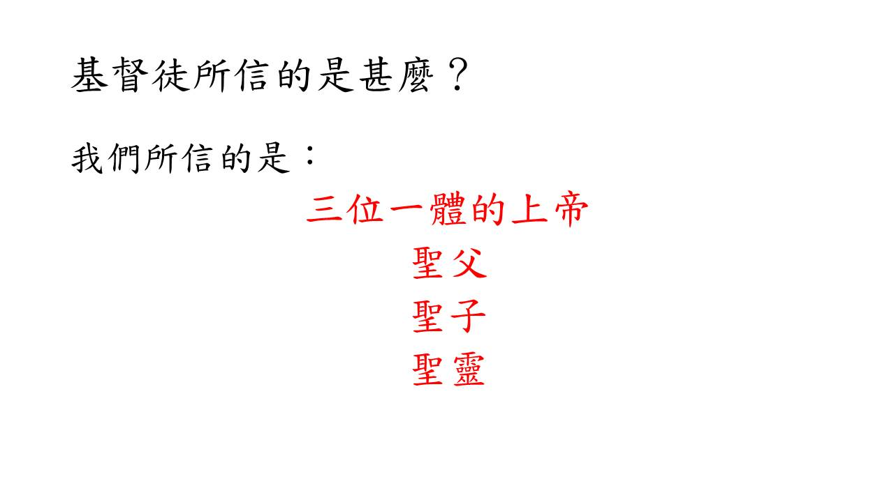
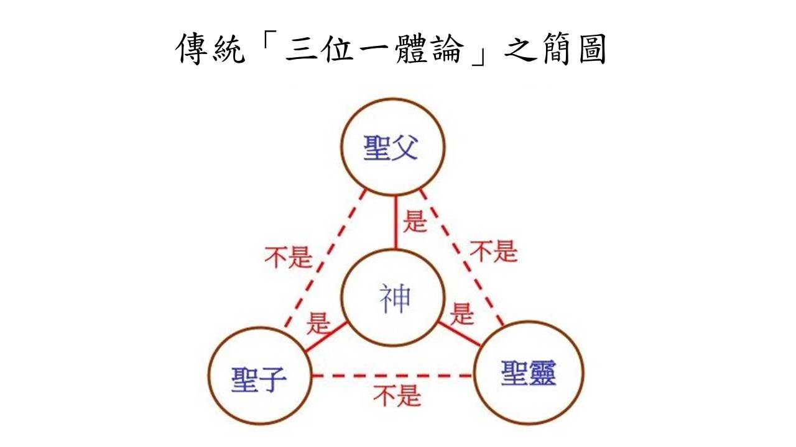
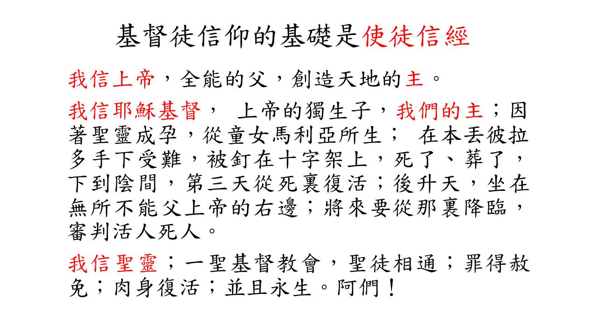
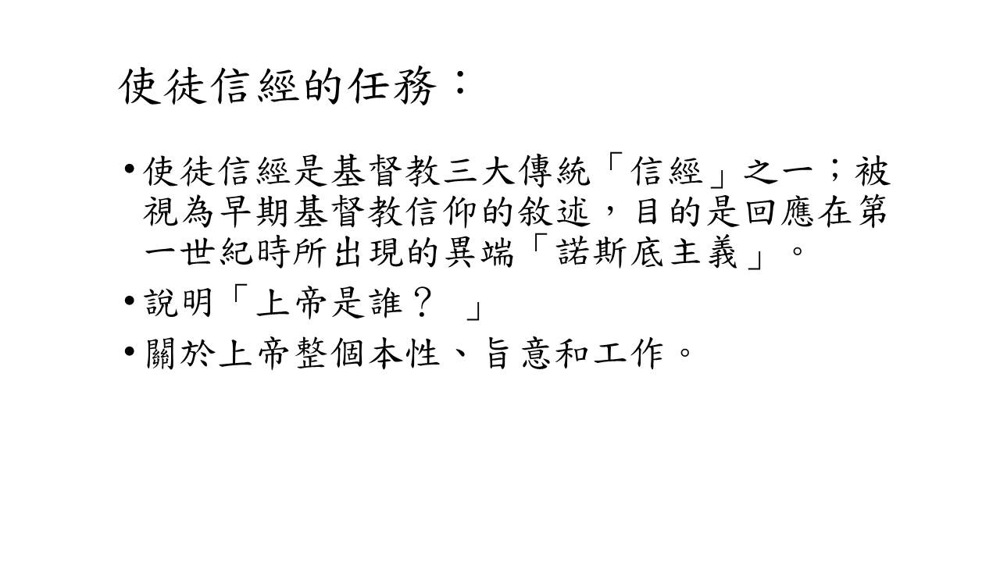
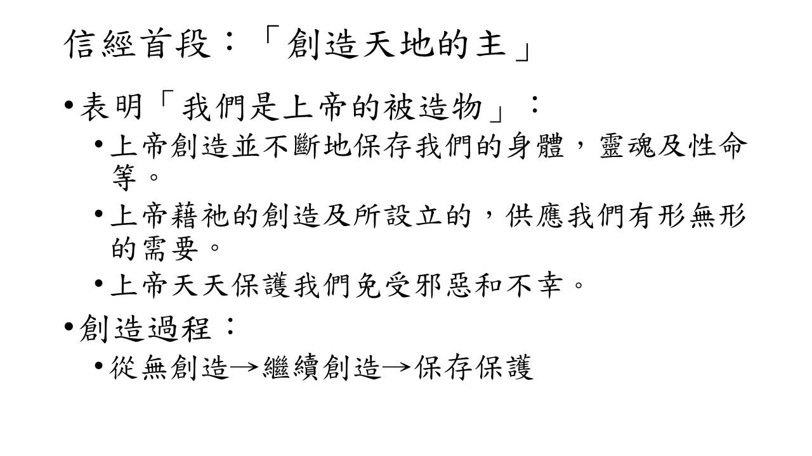
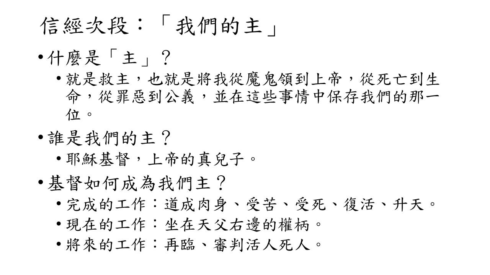
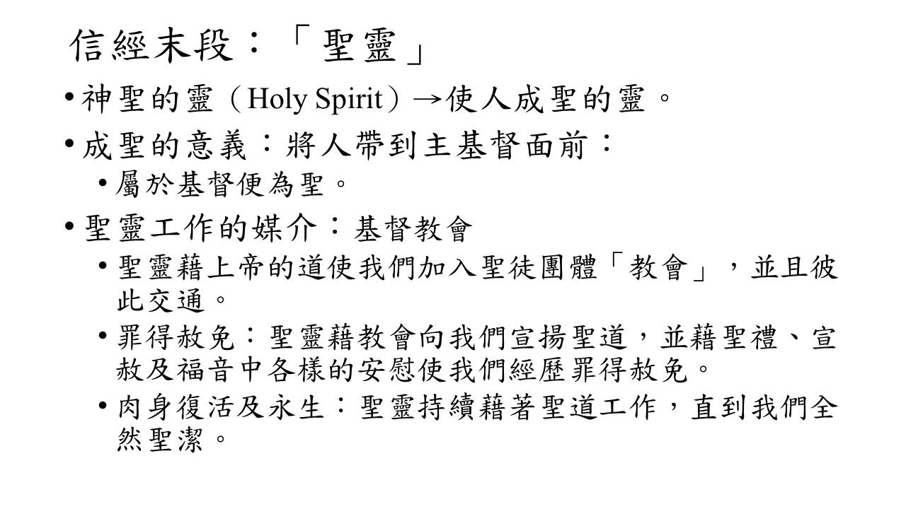
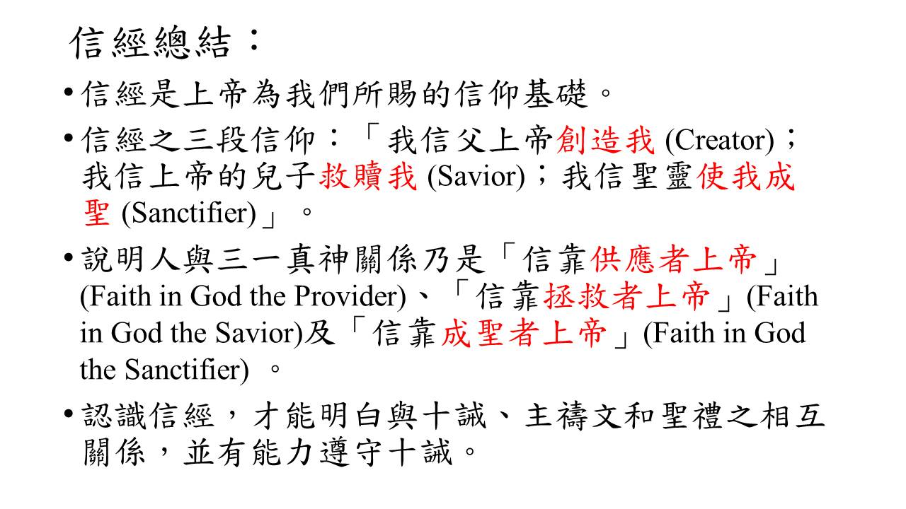
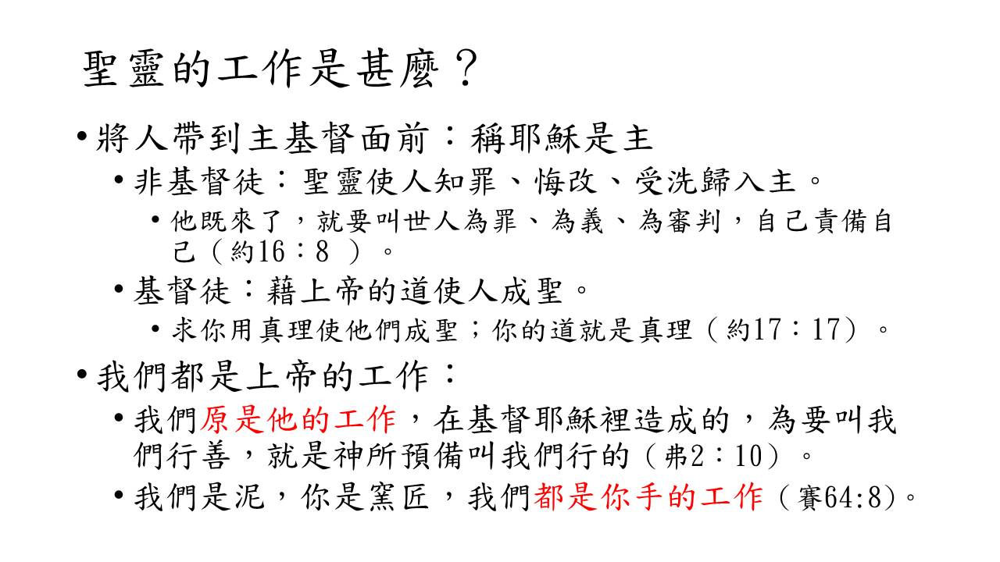
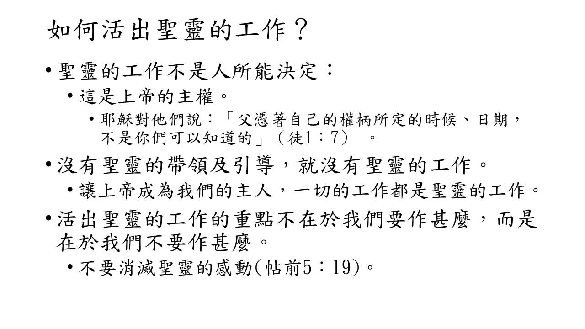
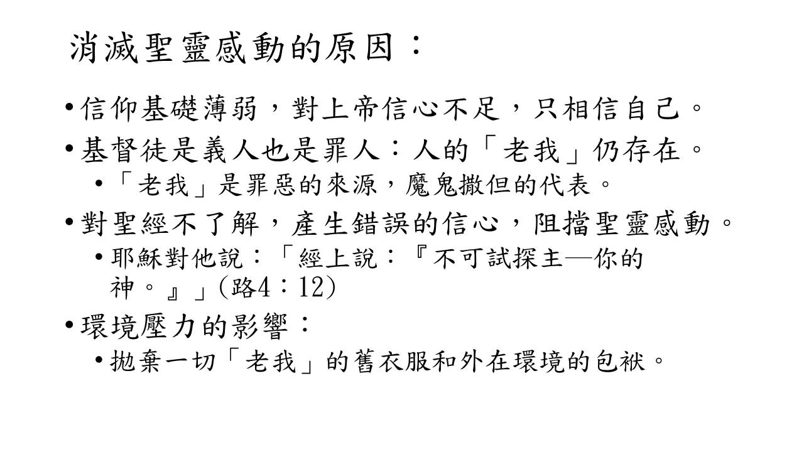
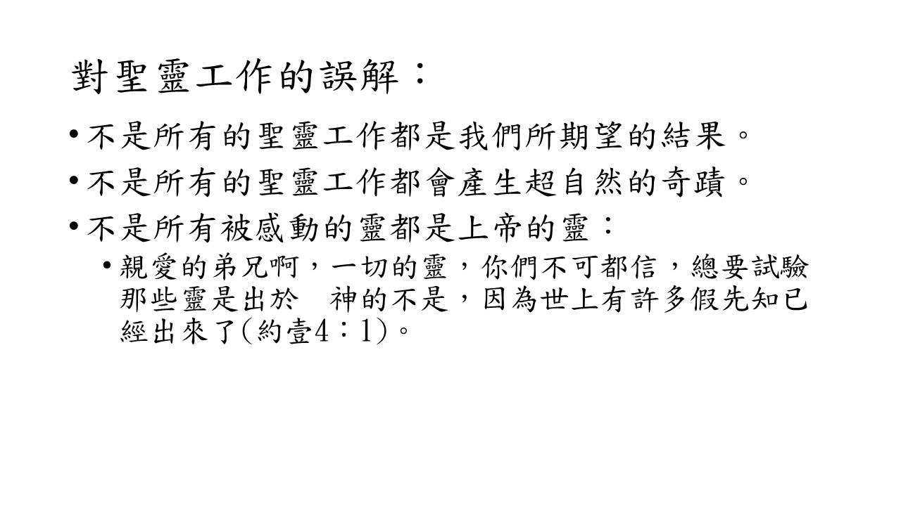
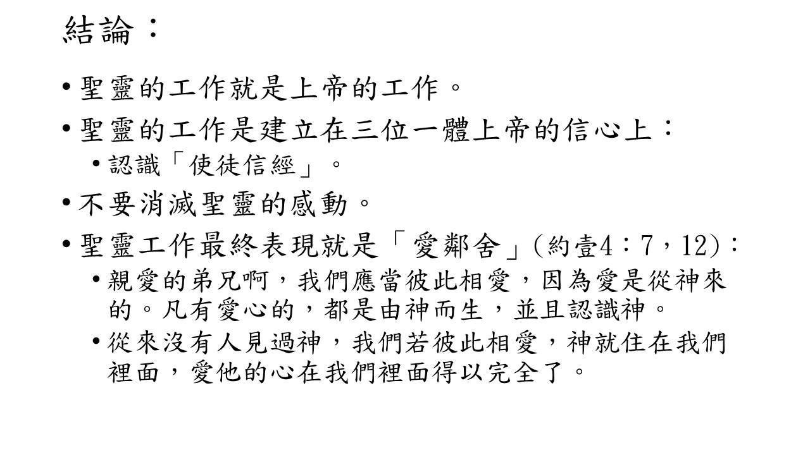
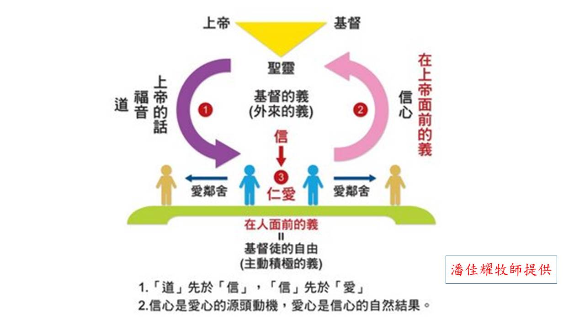
1. 2021年1/16(六)為教會今年第一個禱告會，請弟兄姊妹預備心參加，一起來為教會求恩典。
2. 教會六十周年徵文已開始了，徵求生命見證，請各位弟兄姊妹踴躍提供生命中美好的見證(一月底截稿)。請將見證寄到: church20200401@gmail.com ，記得附上個人生活照，願神記念您為祂作的見證。
3. 教會副堂約櫃屋主日愛筵後輪流打掃日期： 2021年1月份牛棚小組，願神賜下越服事越甘甜之恩。
4. 本堂弟兄姊妹使用奉獻袋的方式: a) 非固定方式~白色奉獻袋，可作隨時不定期奉獻使用; b) 固定方式~黃色奉獻袋可作每週或每月固定奉獻使用; 如有需要參加什一/月定或固定奉獻，歡迎先拿白色奉獻袋作第一次奉獻並註明需要提供固定奉獻袋，司帳同工會為您編號碼，作每次使用。
5. 如您需要「綜所稅扣除額電子化同意書」，將您捐款明細自動載入您報稅系統，請向辦公室索取同意書。
星期 |
時間 |
聚會名稱 |
|---|---|---|
主日 |
上午10點00分 |
主日崇拜、兒童主日學 |
主日 |
下午12點30分 |
長青小組、以勒小組、約書亞小組、保羅小組 佳美小組、盛愛小組、帝寶小組 |
週三 |
晚上08點00分 |
美女小組 |
週四 |
早上09點30分 |
良善小組 |
週四 |
晚上07點15分 |
喜樂小組 |
週四 |
晚上08點00分 |
凡恩小組 |
週五 |
晚上07點30分 |
牛棚小組、得勝小組、百合小組 |
週五 |
晚上08點00分 |
1+7小組 |
週六 |
晚上07點30分
學青牧區 |